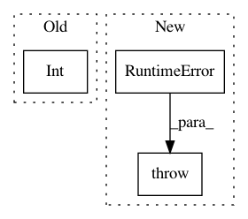

e3db6eaf05783a1682c66e24e288af3022789a2d,src/sos/workers.py,WorkerManager,__init__,#WorkerManager#Any#Any#,373
Before Change
def __init__(self, worker_procs, backend_socket):
self._worker_procs = worker_procs
self._max_workers = int(self._worker_procs[0])
self._local_workers = []
self._num_local_workers = 0
self._n_requested = 0
After Change
self._max_workers = [int(x.rsplit(":", 1)[-1]) for x in self._worker_procs]
self._num_workers = [0 for x in self._worker_procs]
except:
raise RuntimeError(f"Incorrect format for option -j ({self._worker_procs}), which should be one or more [host:]nproc")
self._local_workers = []
self._num_remote_workers = {}
In pattern: SUPERPATTERN
Frequency: 4
Non-data size: 3
Instances
Project Name: vatlab/SoS
Commit Name: e3db6eaf05783a1682c66e24e288af3022789a2d
Time: 2019-08-04
Author: ben.bog@gmail.com
File Name: src/sos/workers.py
Class Name: WorkerManager
Method Name: __init__
Project Name: soft-matter/trackpy
Commit Name: 8d773350f0a0c7233fe2b54053d090a8bf999b1f
Time: 2016-02-18
Author: devin.wieker@gmail.com
File Name: trackpy/static.py
Class Name:
Method Name: pair_correlation_2d
Project Name: pytorch/pytorch
Commit Name: 16e5af41dab3a64072d88d76003dd9c2aa49d4bc
Time: 2021-01-05
Author: pritam.damania@fb.com
File Name: torch/distributed/distributed_c10d.py
Class Name:
Method Name: _store_based_barrier
Project Name: soft-matter/trackpy
Commit Name: 8d773350f0a0c7233fe2b54053d090a8bf999b1f
Time: 2016-02-18
Author: devin.wieker@gmail.com
File Name: trackpy/static.py
Class Name:
Method Name: pair_correlation_3d